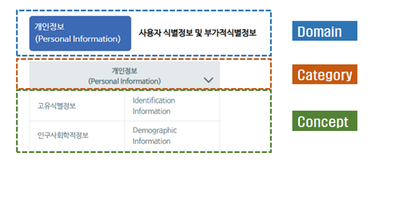
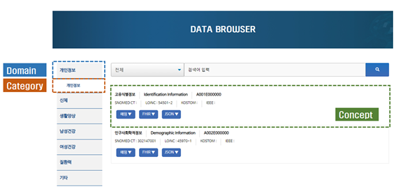
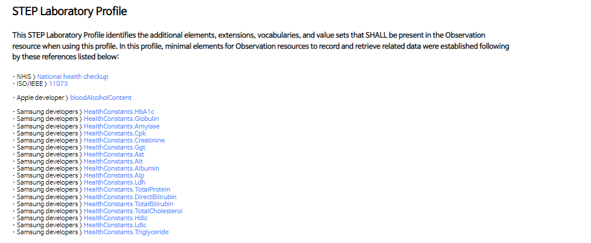
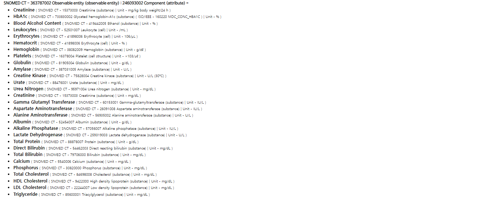
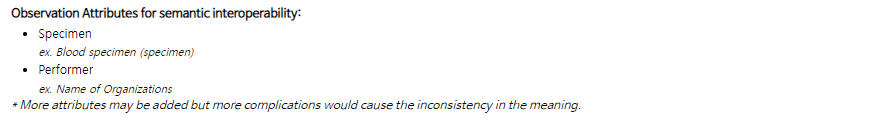
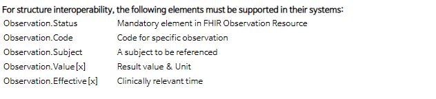
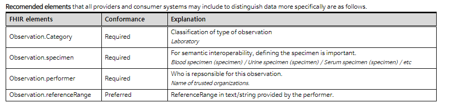

PHR 데이터 모델 및 활용 가이드
- 배경
- 환자 자신의 건강기록을 스스로 관리하는 시대가 도래함에 따라 의료소비자가 능동적으로 참여하여 자신의 건강정보를 스스로 수집, 공유, 교환할 수 있도록 범국가적으로 인정되고, 다양한 서비스와 플랫폼에 활용 가능한 표준이 필요
- 목적
- 국내 PHR 사업자들이 헬스데이터의 교류와 활용을 쉽게 할 수 있도록 국제 표준과 국내 실정을 고려한 PHR 데이터 모델(개념, 용어 및 교류 표준)을 제공하고 민감정보인 개인의 의료데이터를 개발단계에서 점검할 수 있는 보안 가이드를 제공하여 사업자의 글로벌 시장 경쟁력 향상에 도움을 주고자 함
개인건강기록 (PHR, Personal Health Record) 이란 개인이 수집, 관리 및 공유하며 통제할 수 있는 건강과 관련한 모든 기록(들).
※ 본 가이드에서 PHR 데이터는 건강검진기록, 개인의료기, IoT장비, 스마트폰 등 다양한 원천으로부터 수집한 데이터로 스스로 수집, 공유, 교환이 가능한 전자기록으로 한정함 정의함.
- 온라인 가이드 구성
- 본 가이드는 PHR 데이터 모델을 활용하는 사업자의 접근성와 활용성을 높이기 위해 책자 형태가 아닌 온라인 가이드형태로 제공
-
STEP 은 Standard Terms & Expressions for PHR 의 약자로 온라인 가이드에서 제공하는 데이터모델의 공식 명칭으로 제공하는 모든 컨셉과 FHIR 프로파일에 접두어로 사용됨
(예: STEP Data Model, STEP Patient Profile 등) - HOME, DATA MODEL, DATA BROWSER, FHIR ASSETS, SECURITY & PRIVACY 등 총 5개 메뉴로 구성
- DATA MODEL : 개인건강기록(PHR) 서비스 및 관련 활동을 지원하기 위한 참조 정보(개념 및 속성)를 제공
- DATA BROWSER : STEP에서 정의한 데이터를 검색하고 결과를 보여주는 서비스
- FHIR ASSET : STEP DATA MODEL을 기반으로 한 HL7 FHIR(R4) 프로파일 리소스로 PHR 데이터 교환을 위한 Profile, Extention 및 ValueSet 등을 제공
- SECURITY & PRIVACY : 한국에서 PHR 플랫폼 서비스를 개발할 때 고려해야 할 사항을 단계별로 요약하여 제공
글로벌 헬스케어 플랫폼 서비스 (Google Fit ·Samsung Health ·Apple Health) 데이터 항목을 기반으로, 의료데이터 항목 및 FHIR (Fast Healthcare Interoperability Resource) 구현 사례를 참조하여 설계
| Domain | Reference |
|---|---|
| 개인정보 | HL7 CDA 및 FHIR Resource, Apple developer, Samsung developer, Google developer |
| 신체 | Apple developer, Samsung developer , Google developer, ISO/IEEE 11073, 국가건강검진, 서울대병원-진단검사의학과 |
| 생활양상 | 질병관리청-유전체역학조사사업(KoGES), Apple developer, Samsung developer , Google developer, ISO/IEEE 11073 , IPAQ ,기상청, Air Korea |
| 여성건강 | 질병관리청-유전체역학조사사업(KoGES) |
| 남성건강 | 질병관리청-유전체역학조사사업(KoGES) |
| 질환력 | 질병관리청-유전체역학조사사업(KoGES) |
| 기타 | HL7 CDA 및 FHIR Resource |
정보주체(Data subject)를 중심으로 총 7개의 Domain, 19개의 Category, 118개의 Concept으로 정의 (2022.01.21.)
※ 지속적으로 업데이트 예정
각 Domain별로, 다음 그림과 같이 표현되어 있습니다
Concept을 클릭하면, 해당 세부 매핑 내용으로 이동합니다. 세부 매핑 내용의 경우, 데이터가 더욱 명확하게 교류될 수 있도록 속성 및 내용을 최대한 포함하여 제공하였습니다.
DATA BROWSER는 찾고자 하는 용어, 컨셉을 쉽게 검색할 수 있도록 검색 기능을 제공하고 검색결과에 매핑정보, FHIR 프로파일, JSON 예제 등을 아래 그림과 같이 제공합니다.
SNOMED CT를 Primary Key로 용어 매핑을 진행 하였으며 LOINC, KOSTOM, IEEE/ISO 및 삼성, 애플, 구글의 데이터 항목도 제공합니다.

해당 concept을 표현하기 위한 FHIR의 정보모델을 제공합니다. JSON 구조 설계시, 참조하실 수 있는 내용을 담아 프로파일링 하였습니다.
- 데이터 예시를 인터넷 상의 범용적인 데이터포맷인 JSON으로 제공합니다.
- 보유 DB를 FHIR로 전환하기 위한 템플릿으로 사용합니다.
- 파일럿 스터디를 통해 표준 FHIR 규격 서버외 교류를 확인 하였습니다.
- FHIR ASSETS는 STEP 데이터 모델의 교류구조 표준인 HL7 FHIR("https://wwww.hl7.org/fhir/)에서 정의한 리소스를 기반으로 PHR 데이터를 한국 실정에 맞게 프로파일링 한 리소스를 제공합니다.
- 일반적인 의료기록에 대한 프로파일은 CORE Profiles로 정의하였고, 질문지에 대한 프로파일은 Questionnaire-related profiles로 별도로 분류하였습니다.
- IEEE/ISO 11073 Device Specialization에서 분류한 Device를 프로파일링하여 Device-related Profiles을 제공합니다.
- 프로파일링에 필요한 추가항목은 Extention으로 정의하였고, 코드값 참조를 위한 데이터셋을 ValueSet으로 정의하여 제공합니다
- External Resource는 FHIR r4에서 정의한 전체 리소스의 영문설명을 한글화하여 simplifier.net을 통해 게시하였습니다.
PHR 서비스에 자주 사용되는 헬스케어 디바이스 및 라이프로그의 데이터 교류를 돕기 위해, IEEE/ISO 11073의 총 18개 문서를 살펴 Fundamental observation entity에 대해 프로파일링을 작업하여 다음과 같이 정리하였습니다
- Part 10406 Basic electrocardiograph (ECG) (1- to 3-lead ECG) - ECG data
- Part 10407 Blood pressure monitor - Systolic and Diastolic Blood Pressure
- Part 10420 Body composition analyzer - Body Composition
- Part 10441 Cardiovascular fitness and activity monitor - Activity-Walking : Step Count, distance
- Part 10425 Continuous Glucose Monitor -CGM - Blood Glucose Concentration
- Part 10417 Glucose meter - Glucose Concentration
- Part 10471 Independent living activity hub - Sensor Statement : Smoke, Gas, Door, etc
- Part 10419 Insulin Pump - Basal and Bolus Insulin
- Part 10418 International Normalized Ratio -INR monitor - International Normalized Ratio and Prothrombin time
- Part 10472 Medication monitor - Sensor Statement : Medication Disposer
- Part 10421 Peak expiratory flow monitor -peak flow - PEF, FEV1
- Part 10427 Power status monitor of personal health devices - Extension-Device : Power Status Monitor
- Part 10404 Pulse oximeter - SpO2, Pulse Rate
- Part 10424 Sleep Apnoea Breathing Therapy Equipment -SABTE - Apnea-hypopnea index,AHI
- part 10442 Strength fitness equipment - Strength Training - weight, set, etc
- Part 10408 Thermometer - Body Temperature
- Part 10422 Urine analyser - 10-P Urine Analysis strip
- Part 10415 Weighing scale - Height , Weight and Body Mass Index
FHIR R4에서 제공하는 146개의 리소스에 대해 한글화한 버전을 프로파일링하여 Simplifier.net에 게시하였으며, 해당 링크를 제공합니다. Core Profiles로 정의한 이외의 리소스 사용에 도움이 되고자 제공 드립니다. (https://simplifier.net/phrkr-r4)
-
프로필 소개
해당 프로필에 대한 소개 및 참조한 항목들의 리스트 - 
-
데이터 항목
해당 리소스를 사용하여 교류하실 수 있는 데이터 목록입니다.
Primary key로 사용하는 코드를 함께 표현함. - 
-
상호운용성 보장을 위한 권장 속성
의미론적 상호운용성을 보장하기 위해 FHIR 요소에 포함되는 속성들을 SNOMED CT Post-coordination에 반영하여 표현함. - 
-
최소요소
실제 데이터 교류 시, 송수신 데이터 구조에 필수 포함 FHIR 요소 - 
-
권장요소
실제 데이터 교류시, 데이터의 상호운용성 보장을 위해 권장 드리는 속성. - 
-
주 내용(Differential View, XML View, JSON view, Example)
- Differential View
- FHIR에 기본 프로파일에서 프로파일링 한 정보모델입니다. 기존의 틀에
- XML View, Json View
- FHIR의 Implementation Guide가 기본적으로 갖추기에 권장되는 해당 Pro